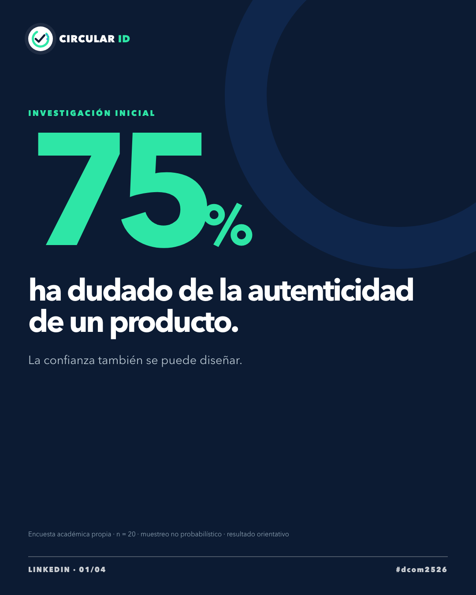
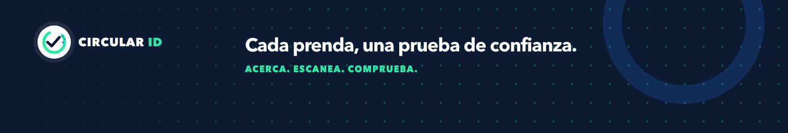
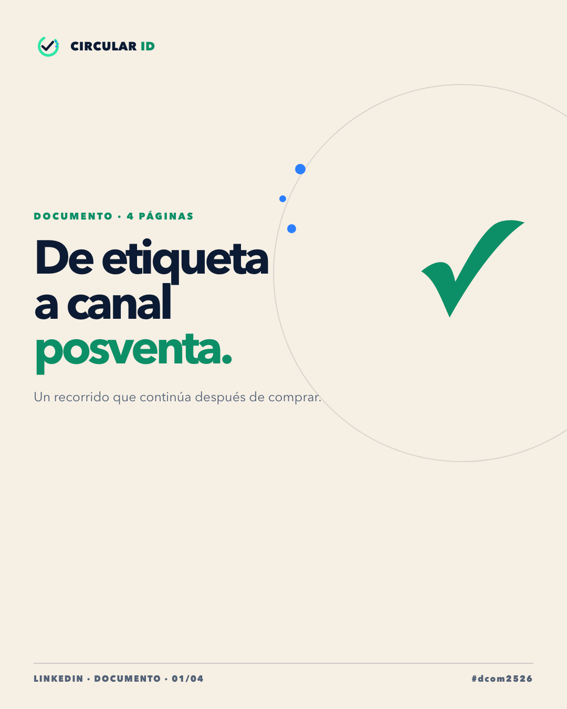
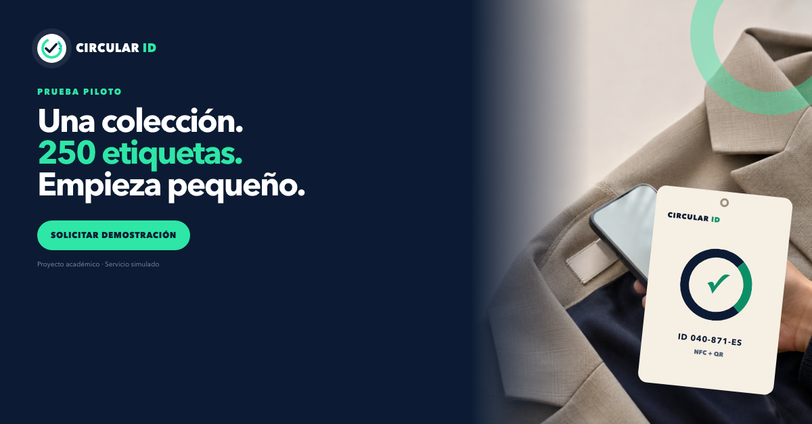

75 % ha dudado de la autenticidadInfografía · 4:5
 CIRCULAR ID
CIRCULAR IDLa cabecera, descripción y contenidos se pueden trasladar a una página de empresa real.

Identidad digital NFC + QR para marcas de moda que quieren convertir cada prenda en una prueba de confianza.


